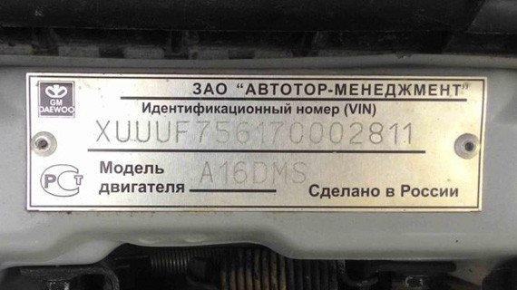
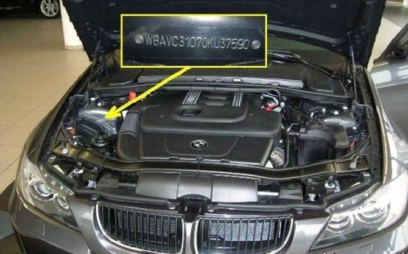
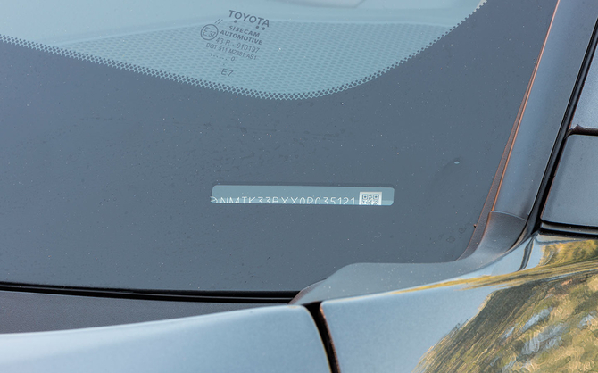
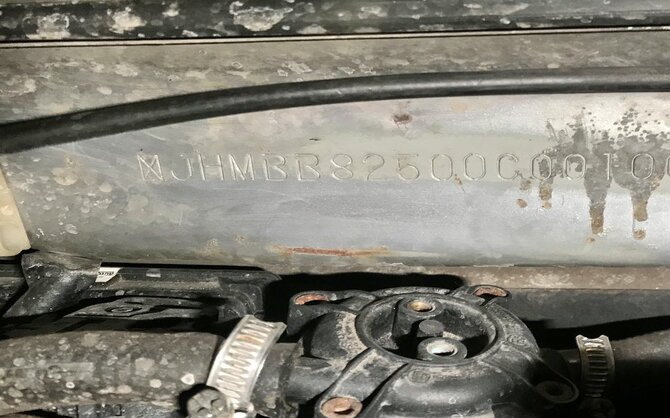
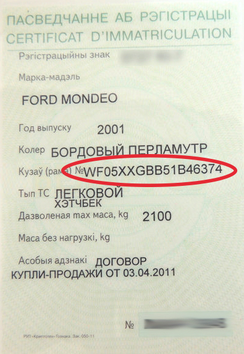

Для нанесения используют несъемные части кузова, которые наиболее защищены от повреждений в случае ДТП.
В современных моделях в качестве такого места выбирают переднюю кузовную стойку с левой стороны.
Также код присутствует слева на верхней части передней панели кабины. Вин-код дублируют на специальной табличке, которую крепят в передней части ТС.
Вот несколько вариантов где найти VIN номер автомобиля:




Либо же посмтреть VIN номер в тех. паспорте Вашего авто.
